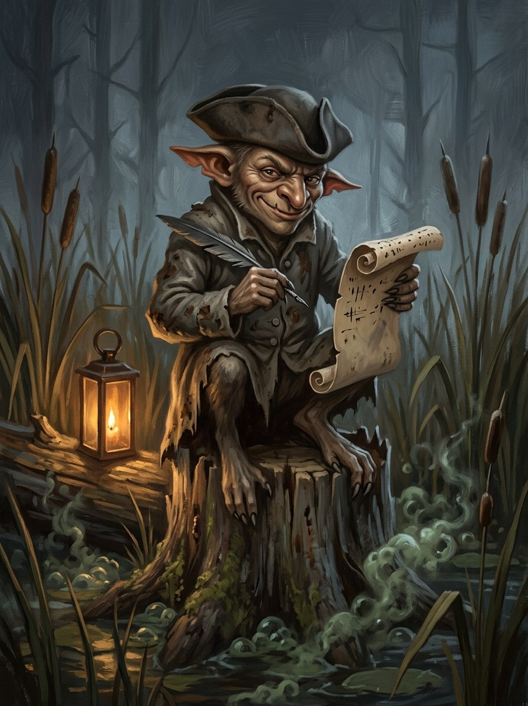

Pinčiukas (clerk of small bargains)¶
Relations
Servant of: Šešėlių Pardavėjas / Henė — The Shadow-Seller’s clerk.
Origin [Historical record] a minor devil best known from Boruta's Baltaragio malūnas (1945); folk currency of the name uncertain · [The saga's invention] the Shadow-Seller's clerk
Tier Dvasia · a named velniukas, Henė's go-between
Danger II hazard → III dangerous
Habitat Mills and millponds
Wants Small bargains with millers, sextons and serving-maids; to keep the threads that bind them
Takes Small obligations (threads) from the small. A miller's debt; a hidden guard's sleeping-place (Kirmėlė, 1382)
Signs A dapper little man who knows everyone's debts; a stammering, polite voice behind a door; a ledger
Banes Make him write the bargain down and read it back aloud
Half-wrong truth. No old belief to correct: the folk name is thinly attested. In the saga he is fussy, polite and fond of mills. He is the reason Henė always knows who in a castle can be bought.
Promoted. Before 1387 one clerk among many. After it, the Unbinding is a boom time for small bargains.
Keeping the threads. He makes the small deals while Henė makes the great ones with princes.
Known deals. Kirmėlė sold Kęstutis's hidden guard through him in 1382 to save his village, and the village burned anyway. In Book II ch. 5 he sold Skirgaila the plot of 1389 for a miller's debt.
The reading-back. He cannot resist reading aloud, but you must be able to spot the trick when he does.
No 'later'. Never let him name the price later. He will refuse the bargain, and you will not get what you came for.
Pinčiukas (clerk of small bargains)

Pinčiukas (clerk of small bargains) · creature¶
Type |
creature |
Status |
The saga’s invention |
Note |
Bestiary §21. Danger II → III. |
Folk source [Historical record]¶
A folk name for a minor devil, best known in literature from Kazys Boruta’s novel Baltaragio malūnas (1945), where Pinčiukas is the devil who bargains with the miller. Boruta drew on oral tradition, but how widespread the name was in folk use is uncertain.
In the saga (where the folk are half-wrong)¶
One named velniukas, the Shadow-Seller’s clerk. Where Henė makes the great deals with princes, Pinčiukas makes the small ones with millers, sextons and serving-maids and keeps the threads that bind them. Fussy, polite, fond of mills and millponds, always carrying a ledger: the reason Henė always knows who in a castle can be bought.
Signs & habitat¶
Mills and millponds; a dapper little man who knows everyone’s debts; a stammering polite voice behind a door.
Before / after the Unbinding¶
Before: one clerk among many. After: promoted; the Unbinding is a boom time for small bargains.
Banes, wards, bargains, and their cost¶
Make him write the bargain down, then read it back aloud (he cannot resist reading), and be able to spot the trick when he does. Never let him name the price “later”; he will refuse the bargain and you will not get what you came for.
Danger level¶
II hazard → III dangerous.
Story hooks¶
Book II ch. 5: he sold the plot of 1389 to Skirgaila for a miller’s debt. Book VI ch. 27: the polite clerk with a ledger at the mill. Books II–IV: Henė’s comic, frightening go-between.
Connections¶
graph LR
pincuikas["Pinčiukas (clerk of small bargains)"]
shadow_seller["Šešėlių Pardavėjas / Henė"]
pincuikas -->|Servant of| shadow_seller
style pincuikas stroke-width:3px